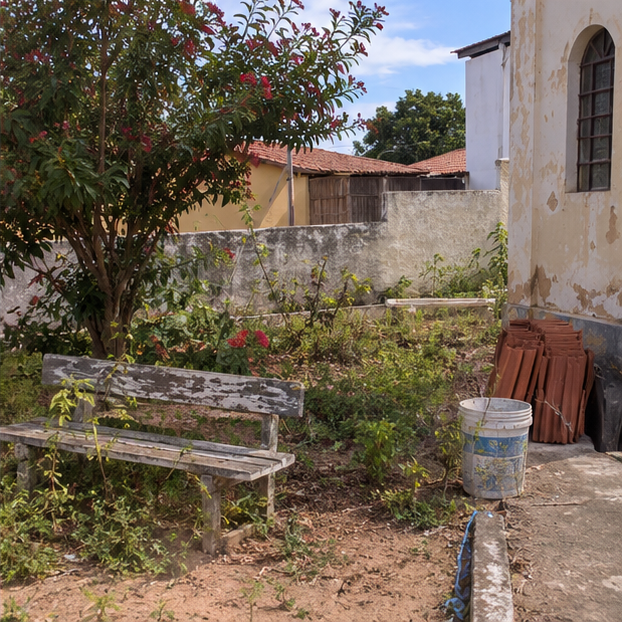
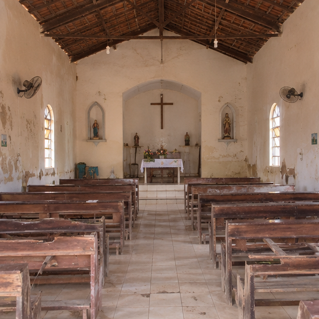
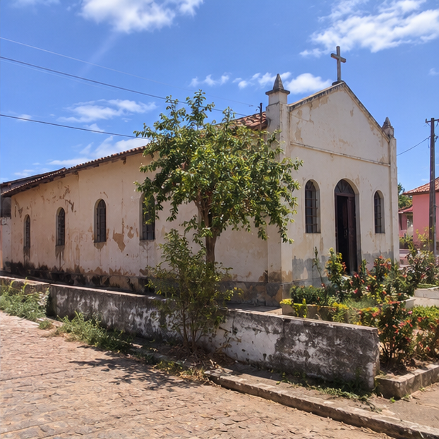

Onde a sua Doação Seria Aplicada

Ponto 1Jardim & Acolhimento
Revitalização completa do espaço verde de entrada com canteiros floridos e limpeza dos caminhos[cite: 14].

Ponto 2Altar & Nave da Capela
Zelo profundo pelo altar sagrado, recuperação e envernizamento dos bancos de madeira da nave[cite: 14].
 Ponto 3
Ponto 3
Fachada Sacra
Restauração e pintura externa da fachada da capela, valorizando a arquitetura histórica sob a luz do sol[cite: 14].

Ponto 4Porta Principal
Restauração artesanal em madeira nobre da grande porta de entrada principal da capela[cite: 14].